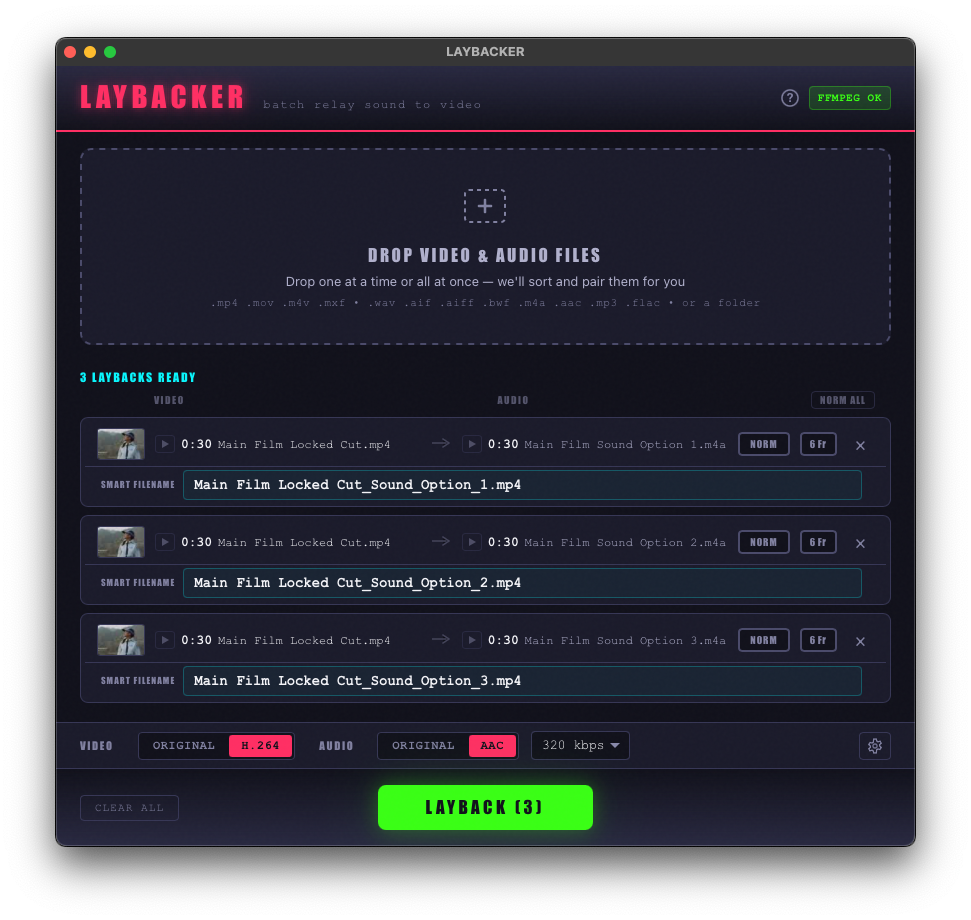

Lay the mix back onto the picture. Drag in video and audio, Laybacker pairs them, adds a slate if you want one, checks and fixes the levels, QCs every file, and exports. Built for sound post-production. Free, open source, and nothing leaves your machine.
latest release · changelog · all downloads
As featured on Production Expert “These Audio Pros Built Their Own Plugins With AI — Here's Why” Read the article →
Dark mode👆 Click the screenshot to see light mode
Make a slate in seconds
Title, version, date — the words that go on the front of a picture. Type them once and Laybacker puts them on every video in the batch.
▸ Card or overlay
A card before the picture, silent underneath, with the sound starting on the first frame of programme — or the text laid over the opening seconds, so the runtime and the sound don't move and versions still line up for A/B.
▸ Drag it where you want it
Every line of text is draggable on a live preview of the picture. Scrub through the opening seconds to keep it clear of whatever the frame already carries.
▸ Names itself
Press VIDEO NAME or AUDIO NAME and the card carries the file's own filename. In a batch, every video gets its own.
▸ Seconds, not minutes
On H.264 files only the slate itself is encoded and the rest of the picture is copied untouched. A full re-encode stays as the fallback for other formats.
▸ Your look
Fifteen fonts, four sizes, your own logo or image, black preroll presets, and a 5-second or 10-second preroll in one click.
▸ Solo or with a layback
Slate a video on its own, keeping its soundtrack, or slate while laying a new mix back — one pass, one file.
What it does
▸ Drag, drop, done
Drop video and audio together — Laybacker matches them by duration and name, and lets you fix any pairing by hand. One mix onto many videos works too.
▸ Broadcast-spec loudness
Pick EBU R128 or ATSC A/85 and the targets and tolerances follow, or set your own. Measured to ITU-R BS.1770. Normalise to loudness or to a true-peak target.
▸ QC everything, every time
Level, true peak, stereo & phase, 6 frames of silence, clicks, clipping and dropouts on every file, laid out in one table with a player that jumps to each fault so you can hear it yourself.
▸ Audio Only page
Split a multichannel file into named mono stems, join stems back into stereo, 5.1 or 7.1, fold surround to stereo or mono, fade, trim silence, and convert to WAV, AIFF, FLAC, ALAC or AAC at 44.1, 48 or 96 kHz.
▸ Multifunction Chain
One ordered run on every file: QC, fix 6 frames and loudness only where they fail, add clock handles, convert, rename. Save it as a preset. Export a CSV of what happened to each file.
▸ Delivery details
6-frame head and tail mutes for UK commercial delivery, 10 s / 5 s clock handles, ProRes working files for Pro Tools, and filenames that carry the spec.
▸ FFmpeg included
No separate install — a pinned, bundled FFmpeg ships inside the app. Nothing else to set up, and it works offline.
▸ Fully local & private
Every file is processed on your own machine. Nothing is ever uploaded. Three themes, including a high-contrast white one.
First launch
Mac:
- Double-click the downloaded
.pkg. - If you see “Apple could not verify…”, click Done.
- Open menu → System Settings → Privacy & Security, scroll to Security, and click Open Anyway next to Laybacker — confirm with your password / Touch ID.
- The installer runs. After that, Laybacker opens normally every time.
More info → Run anyway.
Beyond download safety, the code itself is graded by independent services on every update. SonarCloud rates reliability, security & maintainability — currently A across the board, with zero bugs and zero vulnerabilities. Codecov shows how much of the code its automated tests exercise. CodeQL is GitHub's own security scanner. Click any badge for its live report.
Verify it's genuine
Don't just take our word for it — Laybacker is built to be independently checkable. Five ways to confirm it's safe and untampered:
▸ Open source
The full source is public and every installer is built automatically by GitHub from a tagged commit, with public build logs. Read the code.
▸ Ask an AI to check it
Not a coder? You don't have to be. Give the GitHub link to the AI assistant of your choice — ChatGPT, Claude, Gemini, Copilot, or any other — and ask it to review the code and confirm the app does only what we say it does, and nothing it shouldn't. A second, independent opinion in plain English.
▸ VirusTotal scanned
Each release is scanned by 70+ antivirus engines, with the report links in the release notes. Or scan it yourself at virustotal.com.
▸ Checksums
Every release publishes SHA256SUMS files so you can confirm your download matches our build exactly, byte for byte.
▸ Signed provenance
Each binary carries a cryptographic attestation tying it to the exact public source. Verify with gh attestation verify <file> --repo soundrich-bot/laybacker.
Questions
What is a layback?
In sound post-production, a layback is putting the finished mix back onto the picture: replacing the audio on a video file with the mixed audio so the two can be delivered together. Laybacker does this in batches, pairing each video with its mix by duration and filename.
Can Laybacker add a slate to a video?
Yes. A slate is text such as the title, version and date shown at the start of a picture. Laybacker can add it as a card before the picture, or lay the text over the opening seconds so the runtime does not change. You type the text, drag each line where you want it, and the video's or the mix's filename can be put on the card automatically. On H.264 files the slate is added in seconds because only the slate itself is encoded.
Which loudness standards does it support?
EBU R128 (−23 LUFS, −1 dBTP), ATSC A/85 (−24 LKFS, −2 dBTP) and any custom target, measured to ITU-R BS.1770 with the relative gate. It can also normalise to a true-peak target instead. The pass tolerances follow the chosen standard.
What does the QC check?
Integrated loudness and true peak against the chosen spec, stereo and phase (dual mono, anti-phase, one-sided), 6 frames of silence at the head and tail, digital clicks, clipping (including flat tops from audio clipped upstream) and dropouts. Every check runs on every file, and a player underneath shows the waveform with each fault marked so you can listen back.
Does Laybacker upload my files?
No. Everything is processed on your own computer with a copy of FFmpeg built into the app. It works without an internet connection and never sends your files anywhere.
What does it cost and what does it run on?
Laybacker is free and open source under the GPL-3.0 licence. It runs on macOS (Apple Silicon and Intel) and Windows.
Which file formats does it handle?
Video: MP4, MOV, M4V and MXF. Audio: WAV, AIFF, BWF, FLAC, M4A, AAC and MP3, mono to 7.1. It exports audio as WAV, AIFF, FLAC, ALAC or AAC at 44.1, 48 or 96 kHz and 16, 24 or 32-bit float, and video with the original streams copied or re-encoded to H.264 and AAC.